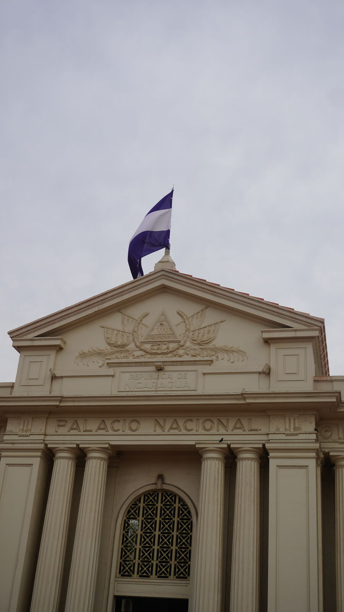
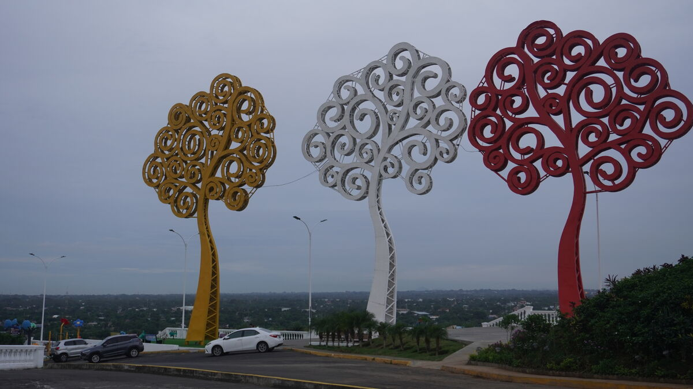
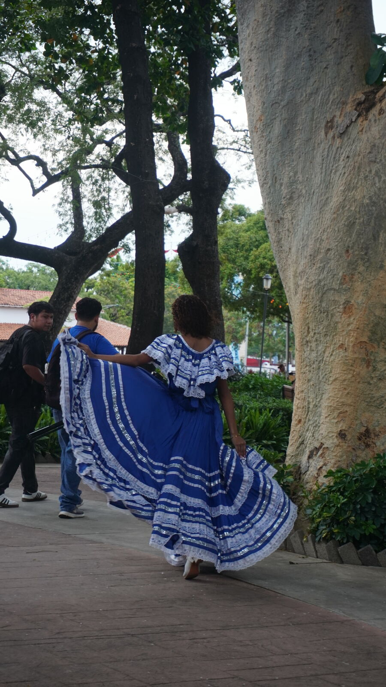
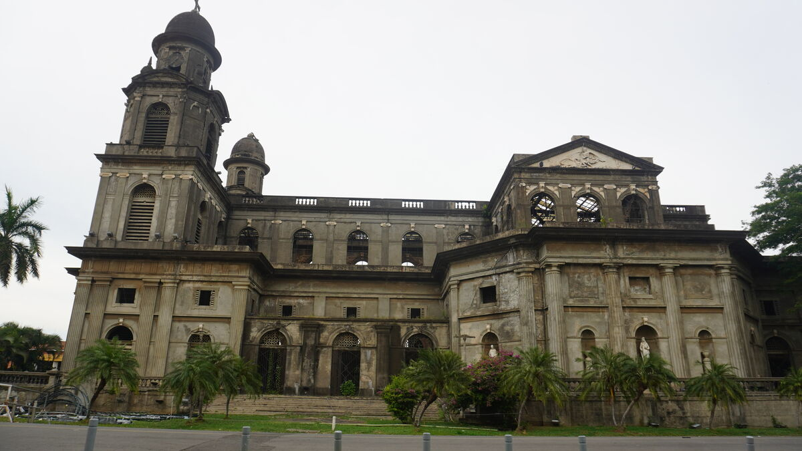
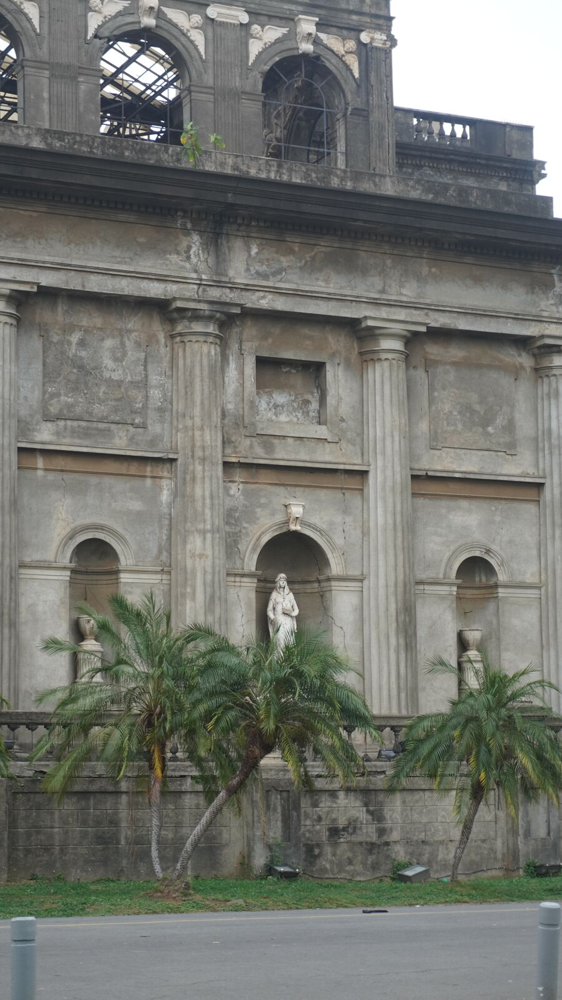
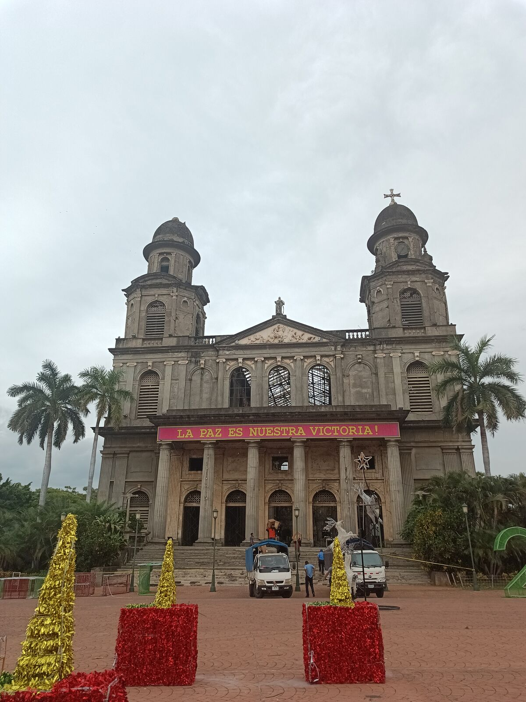
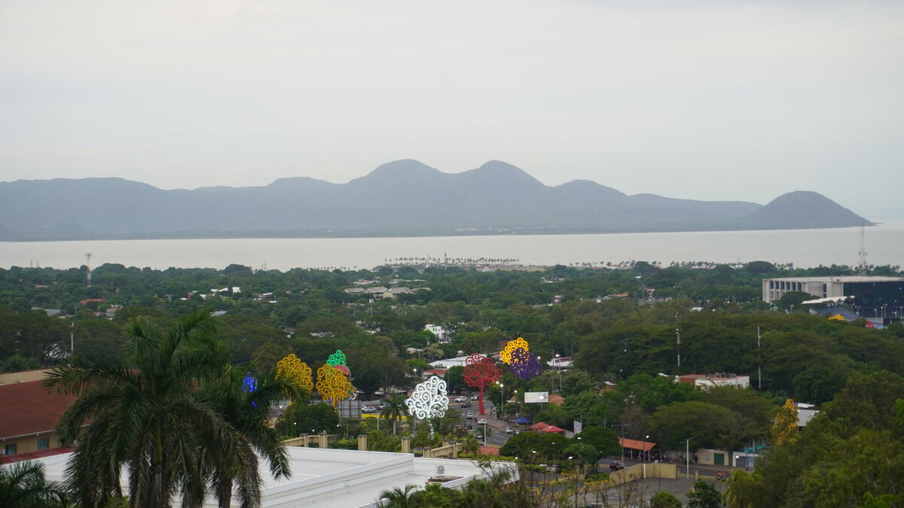
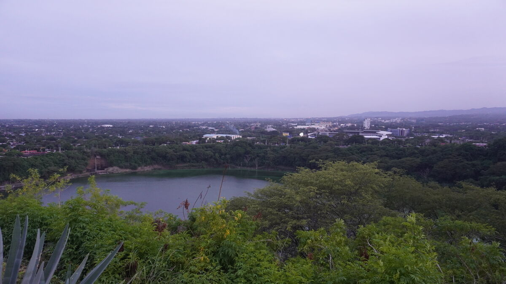
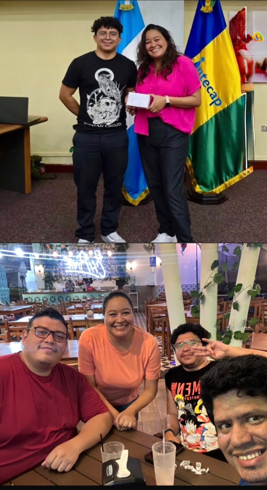

终于出去观光了
很好笑，大家总以为我们是出来玩的，在度假，跟一切断开，不用工作。其实不是：我们一直在工作，因为建立人脉本身就是工作。我们已经和整个中美洲谈好，明年用我们自己的品牌办活动，现在只差通过合作协议、照片等把它正式落实。
周二我们终于出门了，下午多亏了 David，晚上多亏了 Lua。David 是我 2015—2016 年认识的朋友，那时我刚开始参与危地马拉的自由软件社区。后来发现还有一个中美洲范围的社区，我们第一次相聚是 2016 年在哥斯达黎加。推荐大家加入 Telegram 群组 @software_libre_gt 和 @slcentroamerica，告诉他们你是通过 yeffrimic 知道的。
Telegram 群组：Software Libre Guatemala →
Telegram 群组：Software Libre Centroamérica →
我们去 Ecorustik 吃午饭，我第一次吃到用芭蕉代替面粉做饼底的披萨。真的很好吃。我点了一份带 puyazo（一种牛肉部位）的，José 点了披萨，哈哈哈哈哈。说实话太好吃了。这种东西只能在当地吃到，非常本土。如果你去尼加拉瓜，一定要尝尝。
然后我们去了老城区，国家宫就在那里。马那瓜的市中心很有特色，到处是“生命之树”和鲜花，最重要的是很干净。



我们来到老教堂，我一下子想起了《塞尔达传说：旷野之息》，游戏里最早去的地方之一就是一座废墟教堂。真的很像。这一片历史街区太美了。我拍了很多照片，放在这里给大家看。



之后我们去了蒂斯卡帕（Tiscapa）观景台，在马那瓜市中心的一座小山上，能看到整座城市。照片拍不出它真正的美。观景台旁边就是蒂斯卡帕湖，那里还立着历史人物的巨幅画像。


David、José 和我一起聊天。很有意思，素不相识却有共同点的人，可以这么合得来。我很久没见 David 了：上次是 2019 年，我来参加 Mozilla Activate，和另一个朋友 Lexo 一起在他家。那天热得要命，我们居然买了一碗牛肉汤来“缓解”，哈哈哈。我们全都瘫——在地上，因为那是他刚买的房子里最凉快的地方，我们像往常一样出洋相，哈哈哈哈哈。
我们回到酒店。没想到吃那么多芭蕉会让人这么累。7 点要在 El Chante（马那瓜有好几家）和 Lua 见面，于是我们先休息了一会儿。我差点睡着，不过还是叫上 José 出发了。
这里我要补充一句：上一篇我说这里的公路很好，主干道确实如此，看得出是优先建设的；其他街道就简单一些。我们一路没怎么堵车。很有意思，我们在尼加拉瓜还没遇到过堵车，也许是因为我们总在我所说的“错峰时段”出行，但跟危地马拉城完全没法比。
我们和 Lua 聊了天，之前我没见过她本人，但她去年参加过 Arduino Day，甚至还有一张合照，哈哈哈！这时我又一次发现，尼加拉瓜的食物分量很足，而且比危地马拉便宜不少：午饭吃了一大堆，现在一碗手撕牛肉我都吃不下了。不过这里的 cocoa（热可可牛奶）是我喝过最好喝的之一。

我们聊了社区、项目，以及明年要建立的合作。所以是的：Lua 已经成为我们在尼加拉瓜的正式合作伙伴，会帮我们办更多、更好的活动。我没吃完，我们录了今天的视频，然后早早睡了，因为第二天早上 7 点就要出发。
我觉得这是我第一次允许自己拍照、当个游客。前几天并不糟，但今天我们是真的休息、真的去看、真的观光，因为平时我们一直在工作、赶路、骑车、吃饭、睡觉，根本没空参观。最要命的是我们俩都是工作狂，所以挺难的。
我们一点点地改进计划。重要的依然不是拥有完美的计划，而是在每一次迭代中改进它，我和 José 每天都在改进。有好日子，有坏日子，有比别的日子更累的时候，但每天都能学到新东西。希望一切顺利。我们会继续建立合作、壮大这场运动。谢谢大家读到这里，希望你们喜欢这些照片。
👆 点击地图上的任意一个点，即可阅读当天的章节。